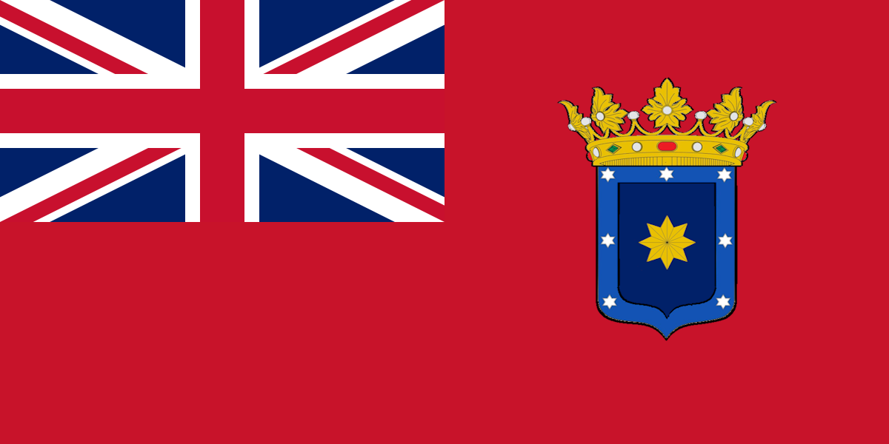

Origins of the Fairchuck Movement
The roots of Fairchuck's independence trace back to the Fairchuck Island Separatism Movement, a grassroots campaign that emerged in the mid-20th century. During this period, the Chuuk Islands were part of the Federated States of Micronesia (FSM), a nation heavily reliant on external aid and under significant geopolitical influence from larger powers, particularly the United States. Despite being integral to FSM’s identity, many Chuukese felt marginalized by the centralized governance structure centered in Pohnpei, the FSM’s capital.
The Fairchuck Movement was born out of frustration with unequal resource distribution, cultural neglect, and the erosion of traditional Chuukese autonomy. However, the movement gained a significant boost when wealthy French families began to fund separatist activities in exchange for future business opportunities and land concessions in the newly envisioned state. This external financial support not only provided the resources necessary for organized advocacy but also led to an influx of French migrants. Over time, French culture and language began to intertwine with local traditions, and French was established as a co-official language alongside Chuukese.
The Push for Independence (1950s-1970s)
The early decades of the movement were marked by peaceful protests, community gatherings, and cultural revitalization efforts. Local leaders like Tarenos Mangilap and Faima Tukunang became the faces of the movement, advocating for decentralization and a larger share of the economic aid funneled through FSM’s central government. They also highlighted the need for sustainable development tailored to Chuukese traditions, rather than externally imposed models.
The financial backing of the French benefactors allowed the movement to expand its outreach. This included organizing international lobbying campaigns and creating educational initiatives that emphasized the benefits of sovereignty. By the late 1960s, the movement gained momentum as younger generations, educated abroad—often in France—returned with new ideas about governance and self-reliance. In 1972, the first major demand for a referendum on Chuukese independence was submitted to FSM authorities but was rejected, sparking protests across the islands.
The Declaration of Independence (1982)
Following decades of mounting tensions, the situation reached a boiling point in the early 1980s. A particularly harsh economic downturn in FSM, coupled with growing dissatisfaction over failed infrastructure projects in Chuuk, led to widespread unrest. On March 12, 1982, a coalition of local leaders formally declared the independence of the Sovereign Maritime Commonwealth of Fairchuck, with Tarenos Mangilap installed as the first interim president.
The declaration was met with both celebration and apprehension. While many Chuukese embraced the new nation, FSM’s central government and international stakeholders, including the United States, initially refused to recognize Fairchuck’s sovereignty. French support, however, provided crucial diplomatic leverage. French advisors assisted in the drafting of Fairchuck’s provisional constitution, which incorporated democratic principles while acknowledging French-Chuukese cultural integration.
The Struggle for Recognition (1982-1990)
The early years of Fairchuck’s independence were fraught with challenges. The fledgling nation faced economic blockades, political isolation, and internal divisions over the direction of its governance. However, the Fairchuckese demonstrated remarkable resilience. They established a provisional government in Weno, the largest island, and began crafting a constitution rooted in traditional Chuukese customs while incorporating democratic principles. French migration to Fairchuck continued steadily, further embedding French culture into the islands’ fabric.
Diplomatic efforts were spearheaded by President Mangilap, who sought support from regional powers like Japan and Australia, as well as non-aligned nations. In 1987, Fairchuck received its first international recognition from Kiribati, marking a turning point in its quest for legitimacy.
The Compact of Sovereignty (1991)
After nearly a decade of negotiation, Fairchuck’s status was formalized through the Compact of Sovereignty signed on July 4, 1991. The agreement, brokered with FSM and endorsed by the United Nations, allowed Fairchuck to operate as a polity with limited recognition while maintaining cooperative economic and security arrangements with its neighbors. French influence was officially acknowledged in the Compact, granting French citizens and businesses preferential rights in key sectors such as tourism and trade.
Nation-Building and Modern Challenges
Since its declaration, Fairchuck has focused on building a sustainable economy rooted in eco-tourism, artisanal fisheries, and renewable energy. The country also prioritized education, ensuring that the Chuukese language and cultural practices were preserved in the face of globalization, while French became a language of governance, education, and business.
Fairchuck’s path has not been without obstacles. Rising sea levels, limited natural resources, and geopolitical pressures remain ongoing concerns. However, the nation’s commitment to self-determination and its ability to blend tradition with modernity have positioned it as a beacon of resilience in the Pacific.
Legacy of the Fairchuck Movement
The Fairchuck Island Separatism Movement is remembered as a testament to the power of grassroots activism and the enduring importance of cultural identity. Today, the Sovereign Maritime Commonwealth of Fairchuck, a polity with limited recognition, stands as a symbol of what can be achieved when a people unite to reclaim their sovereignty and chart their own destiny. The integration of French influence remains a defining feature, symbolizing the complexities and opportunities of international partnerships in the pursuit of independence.
Government and Politics
The Sovereign Maritime Commonwealth of Fairchuck operates under a unique bicultural constitutional framework, blending traditional Chuukese governance with modern French-inspired administrative systems. This duality reflects the nation's history of indigenous autonomy and French influence, ensuring representation and balance.
System of Government
Fairchuck is a unitary semi-militarized republic, known in French as a République Semi-Militarisée Unitaire. The government is structured to include both elected and appointed officials, ensuring representation for local Chuukese leaders and international stakeholders.
Executive Branch
- General Commissioner (Commissaire Général): The head of state and supreme commander of the nation. The High Commissioner oversees international relations, defense, and overarching executive authority. They serve a six-year term, elected by popular vote.
- Chancellor-General (Chancelier Général): The head of government, responsible for daily administration, policy implementation, and coordination of the provincial governors. Appointed by the High Commissioner with the approval of the National Assembly.
Legislative Branch
- National Assembly (Assemblée Nationale): A unicameral legislature composed of 60 representatives, 40 elected by proportional representation from the islands and 20 appointed by the High Commissioner to ensure regional and French community interests.
- Strategic Council for International Administration (Conseil Stratégique pour l'Administration Internationale): An advisory body rooted in Chuukese tradition, representing local chiefs and elders. While not a legislative body, the council holds veto power on matters impacting cultural heritage and land use.
Judicial Branch
- Supreme Tribunal (Tribunal Suprême): The highest court, ensuring constitutional compliance. Justices are appointed by the High Commissioner and confirmed by the National Assembly.
- Maritime Arbitration Court (Cour d'Arbitrage Maritime): A specialized court for resolving disputes related to maritime law, reflecting the nation's dependence on the ocean.
Administrative Divisions
Fairchuck is divided into 12 Maritime Provinces (Provinces Maritimes), each governed by a provincial council and a governor (Gouverneur), elected locally. These provinces are further subdivided into municipal districts to ensure local representation.
Key Government Roles
- Admiral of Maritime Affairs (Amiral des Affaires Maritimes): Oversees ocean resource management, environmental protection, and naval operations.
- Custodian of Cultural Heritage (Gardien du Patrimoine Culturel): Responsible for preserving Chuukese traditions and promoting French cultural integration.
- Chief Envoy for Foreign Relations (Envoyé Principal des Relations Étrangères): Manages diplomatic efforts and international partnerships.
Intelligence and Security
The Fairchuck National Intelligence Coordination Agency (FNICA) oversees national defense, cyber intelligence, counterintelligence, and law enforcement support. Its departmental structure includes:
- Department of Maritime Intelligence (DMI): Monitors maritime borders and tracks illicit activities at sea.
- Cyber Operations Bureau (COB): Oversees cybersecurity and protects national infrastructure.
- Office of Counterintelligence (OCI): Identifies and neutralizes internal and external espionage threats.
- Strategic Threat Assessment Division (STAD): Analyzes global and regional threats to national security.
- Criminal Intelligence Bureau (CIB): Coordinates with law enforcement to investigate organized crime and smuggling.
Leadership and Oversight
- General Commissioner of Intelligence (Commissaire Général du Renseignement): Oversees all intelligence operations and ensures coordination between departments.
- Directorate Council (Conseil de Direction): Composed of department heads reporting directly to the General Commissioner.
- Strategic Advisory Unit (Unité de Conseil Stratégique): Advises on long-term security strategies.
| Sovereign Maritime Commonwealth of Fairchuck | |
|---|---|


|
|
| Capital | Weno |
| Currency | Fairchuckese Rial (FRI) |
| Official Languages | Chuukese, French |
| Status | Polity with limited recognition (1982) |
| Demonyms | Fairchuckese |
| Area | 116,2 km² |
| Population | 48 654 |
| Driving Side | Right |
| License Plate Prefix | FCH |
| Highest Elevation | 15 meters |
| Government Type | Unitary Semi-Militarized Republic |
| Key Government Figures |
General Commissioner: Alphonse Mangilap Chancellor-General: Leona Tukunang Legislative President: Faima Leclerc |